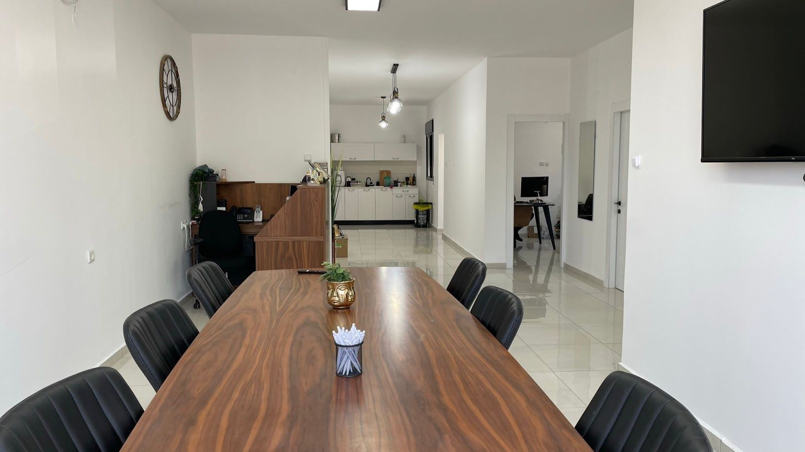
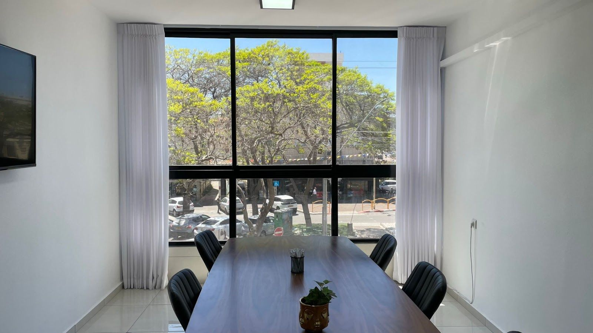
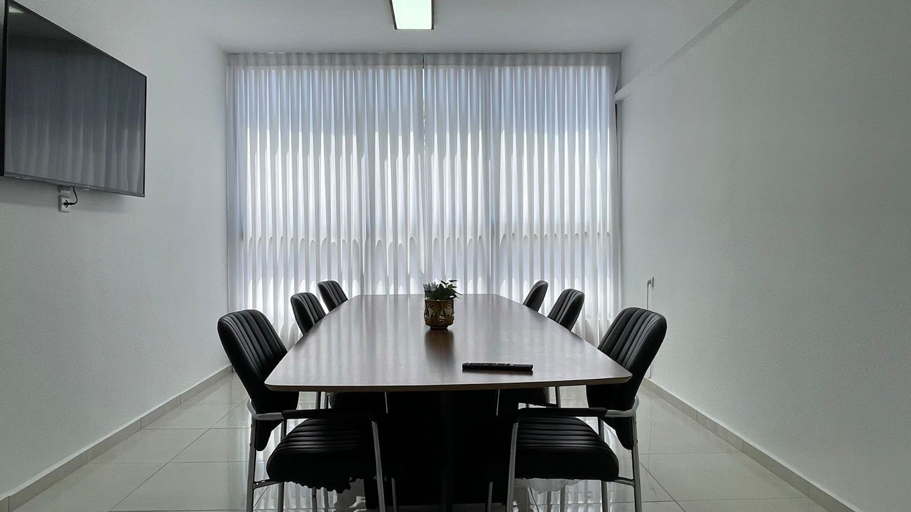

נאור כהןNaor Cohen
Prime Nadlan · יועץ נדל״ן בקריותPrime Nadlan · real-estate consultant in the Krayot
תיווך · יזמות · שיווק נדל״ן, מהשולחן הזה בשדרות משה גושן.Brokerage · development · marketing, from this table on Moshe Goshen Ave.
שלושה תחומים, שם אחדThree fields, one name
כך כתוב על הלוגו, וכך העסק בנוי.It says so on the logo, and that is how the business is built.
- תיווךBrokerageמכירה וקנייה של נכסים בקריותSelling and buying property in the Krayot
- יזמותDevelopmentפרויקטים חדשים בנדל״ןNew real-estate projects
- שיווק נדל״ןMarketingשיווק נכסים ופרויקטיםMarketing homes and projects

קריית מוצקיןKiryat Motzkin הנוף מחדר הישיבותThe view from the meeting roomחדר הישיבות, מול העציםThe meeting room, facing the trees
המשרד בשדרות משה גושן 12, קריית מוצקין.The office: 12 Moshe Goshen Ave, Kiryat Motzkin.
ספרו לנאור מה אתם מחפשיםTell Naor what you’re after
שלוש בחירות, והודעה מוכנה לוואטסאפ.Three choices, and a WhatsApp message is ready.
-
מה צריך?What do you need?
-
איזה נכס?What kind of property?
-
איפה?Where?
אל: נאור · Prime NadlanTo: Naor · Prime Nadlan
שליחה בוואטסאפSend on WhatsApp
מה אומרים על נאורWhat people say about Naor
דירוג 5.0 מ-17 ביקורות בגוגל.Rated 5.0 from 17 Google reviews.
נאור מתווך מקצועי, ישר והגון.שמחים מאוד שהיה איתנו לאורך כל התהליך של מכירה, היה זמין וקשוב לכל הבקשות שלנו . ממליצים מכל הלב!
“Naor is a professional, straight and decent broker. We’re very glad he was with us through the whole sale, available and attentive to all our requests. We recommend him wholeheartedly!”
נאור בחור מקצועי ביותר, עזר לנו במכירת הבית בקלות ובתיווך מקצועי ועל הצד הטוב ביותר. ממליצה בחום.
“Naor is extremely professional. He helped us sell our home easily, with professional brokerage done in the best way. Warmly recommended.”
נאור, מתווך אמין וטוב בקריות. ימצא לכם בדיוק מה שאתם צריכים
“Naor, a reliable, good broker in the Krayot. He’ll find you exactly what you need.”
מתווך מעולה תהליך קצר ומקצועי תודה רבה נהנו מכל רגע ממליץ בחום
“An excellent broker, a short and professional process. Thank you very much, we enjoyed every moment. Warmly recommended.”
מתווך מקצועי מאוד ואמין. ממליצה בחום
“A very professional and reliable broker. Warmly recommended.”

לפני שנפגשיםBefore we meet
במה Prime Nadlan עוסק?What does Prime Nadlan do?
תיווך, יזמות ושיווק נדל״ן.Real-estate brokerage, development and marketing.
איפה המשרד?Where is the office?
שדרות משה גושן 12, קריית מוצקין. יש בו חדר ישיבות עם חלון גדול לרחוב.12 Moshe Goshen Ave, Kiryat Motzkin, with a meeting room that has a big window onto the street.
מתי אפשר להגיע?When can I come by?
ראשון עד שישי, 8:30–21:00. בשבת סגור. כדאי לתאם קודם בטלפון או בוואטסאפ.Sunday to Friday, 8:30–21:00; closed on Saturday. Best to arrange it first by phone or WhatsApp.
באיזה אזור?Which area?
בקריות. כך נאור מציג את העסק בגוגל: יועץ נדל״ן בקריות.The Krayot. That is how Naor lists the business on Google: real-estate consultant in the Krayot.